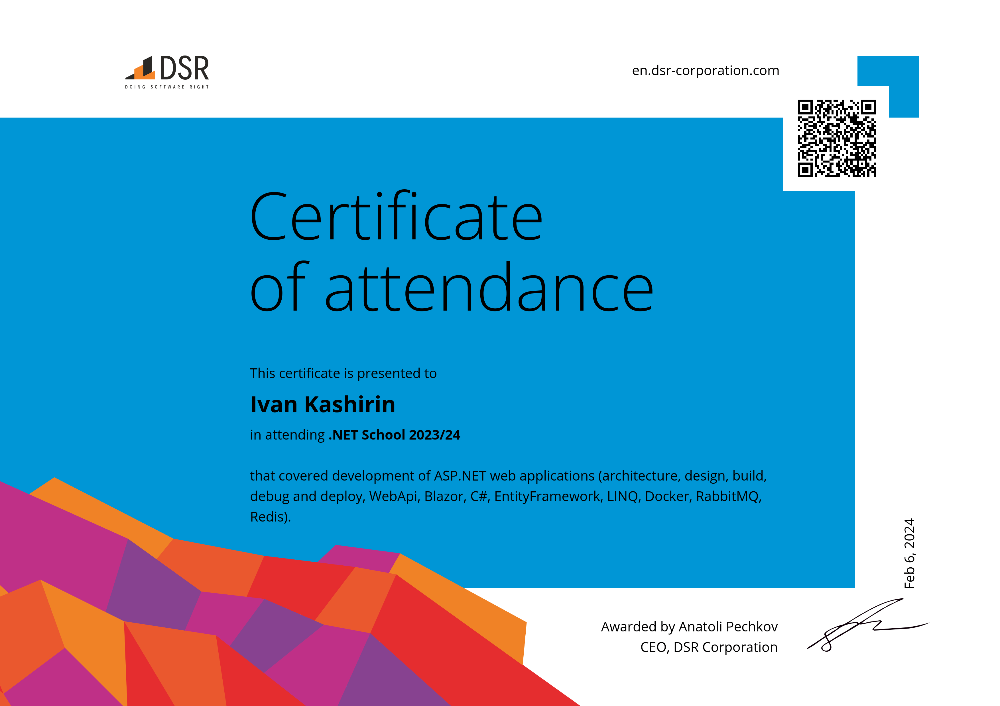

Лекции проходят в зуме по понедельникам в 18.00 c 2 октября по 18 декабря (12 лекций)
us02web.zoom.us
Лекция в четверг 9.11.2023 в 18.30
us02web.zoom.us
Workshop в 18.30 по четвергам с 23 ноября по 28 декабря (6 практик)
us02web.zoom.us
Финальное тестирование в понедельник 18.30 29 января 2024. Результаты теста в понедельник в 18.30 5 февраля 2024.
Репозиторий с примерами и практикой
github.com/KononovAndrey/NetSchool2023
ru.dsr-corporation.com DSR создана инженерами для инженеров
ru.dsr-corporation.com/student Учебный центр
ru.dsr-corporation.com/student/courses/dotnet-school .NET School
ДЦ "Тезис", ул. Свободы, 69, Воронеж, Воронежская обл., 394006
Окунемся в мир .NET веб-разработки под чутким руководством инженеров DSR Corporation. Во время прохождения курса вы узнаете, как разрабатывается реальное приложение, из чего оно состоит и как выглядит процесс промышленной разработки ПО.
Следите за новостями учебного центра в группе ВК, ТГ-каналах для России и Ташкента.
Курс .NET School – это все что нужно знать и уметь Junior .NET разработчику. Мы пройдем полный цикл разработки WebAPI от проектирования БД до CI/CD и рассмотрим полезные инструменты, необходимые программисту на всех этапах создания приложения.
Темы:
о профессии: чем программист похож на садовода и как «выращивают» программы;
обзор и области применения фреймворка .NET;
архитектура веб-приложений;
инфраструктура для веб-разработки;
основы программирования на С#;
СУБД: виды и области применения;
предметное знакомство с ASP.NET;
слои архитектуры серверной части веб-приложения;
тестирование: виды, уровни, методы и инструменты;
что такое комбинация CI/CD и зачем она нужна.
Формат: онлайн: лекции + практические занятия + курсовой проект.
Преимущества:
полностью бесплатное обучение;
преподаватели курса — опытные веб-разработчики;
самых талантливых пригласим на собеседование.
Результат:
узнаете о современной веб-разработке из первых рук;
приобретете знания и навыки Junior .NET разработчика;
напишете работающее веб-приложение на C#;
получите рекомендации по дальнейшему профессиональному развитию.
Что нужно, чтобы успешно пройти курс:
базовые знания С#;
базовые навыки программирования в Visual Studio;
интерес к разработке веб-приложений;
компьютер или ноутбук под управлением Windows/MacOS.
Курс ориентирован на студентов ВУЗов Ташкента и Воронежа. Входное тестирование отсутствует. Курс длится 2 семестра и завершится в мае 2024 года. Презентация и занятия — онлайн.
